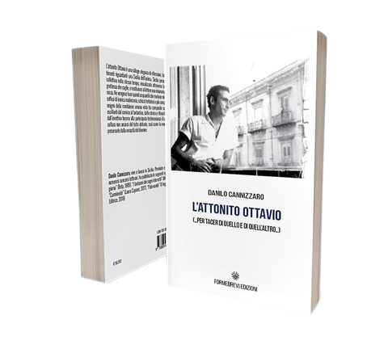
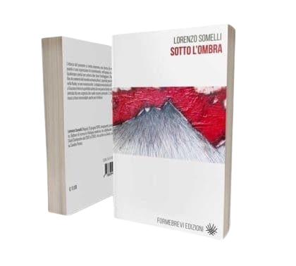

Pupazzi di Pioggia
Leggi la scheda
Cinque personaggi - un Signore Irrequieto, un maggiordomo chiamato Domani, una Signora Grassa, un Commendatore Distratto, un Giovane Timido - si imbarcano per un viaggio di piacere e di avventura su una nave guidata da un Capitano e governata da un marinaio di nome Perfetto Imbecille. Ma il piacere e le avventure non vengono, perché un Impiegato dell'Agenzia Viaggi ha truccato l'itinerario e con le sue strane istruzioni costringe la nave ad errare sui mari. I personaggi si rifugiano allora nel racconto di avventure immaginarie. Ma, approdati su una costa sconosciuta, dopo aver scoperto che i personaggi del racconto inventato - il Re Incerto VII e sua moglie la Regina Giubilosa, insieme con molti altri più o meno secondari - esistono davvero, finiscono per rimanere implicati nelle loro storie.

L'Attonito Ottavio
Leggi la scheda
"L'attonito Ottavio" è una silloge elegiaca di riflessioni, fatti, ritratti, sentimenti riguardanti una Sicilia dell'anima. Sicilia personale, intima e collettiva nello stesso tempo, visualizzata attraverso la deformazione grottesca che coglie, e restituisce al lettore una visionaria fisionomia barocca. Ne vengono fuori quindi acquarelli che rivelano miraggi scherzosi soffusi di ironica malinconia, schizzi frettolosi e più compiuti studi degli enigmi della condizione umana vista tra composite rappresentazioni oscillanti dal comico al fantastico, dallo storico e filosofico all'apologo, dall'invettiva becera alla partecipata testimonianza d'una età e d'una cultura non ancora del tutto defunte, così come la memoria vorrebbe preservarle dalla voracità del divenire.

Sgorbie e Misericordie...
Leggi la scheda
L'anticonvenzionalità non è un valore a priori ma un momento di approdo nel caso in cui la stringente coerenza del materiale poetico richiede di essere calibrato da una sua formulazione precipua. Questa calibratura a volte mutua anche la forma del suo stesso dire. Da questo punto di vista, Morena Coppola esordisce con pagine in cui, a volte, decadendo anche la struttura del verso libero, illustra un percorso che basa la sua ricognizione sull'impossibilità di ottenere una mappa aprioristica: "Opus incertum, in ciò sta il fine, la teleologica rissa tra scavi e reinterri".

Appuntamento con l'Arcangelo
Leggi la scheda
Di una casa con una grande bocca sul tetto, di mappe tatuate sulla pelle e viaggi in terre sperdute, di intrecci e vicende che portano a scoprire l'ignoto, approdi di un viaggio che non ha fine, nel suo circolare svolgersi tra le storie che incontrano la meraviglia. Con questa sua opera, Maurizio Corrado ci trasporta in un universo immaginifico con una prosa che ha il potere di evocare luoghi sconosciuti, traiettorie indefinibili del sapere, una scrittura fatta di immagini che si appartengono, parole che si rivelano raccontandosi, come a ricordarci di quel grande viaggio della coscienza, "questo ammasso di reale" che "di volta in volta si chiama immaginario, inconscio, parte nascosta, memoria".

La ferita distorta dell'agire
Leggi la scheda
Poesia in prosa che slarga contemporaneamente su diversi universi semantici dove mondi solitamente tenuti in disparte vengono connessi da una forza sintattica che ha dell'epico.

Della fine
Leggi la scheda
"La nostra vita è una terra malamente calpestata e poi riassestata con mezzi risibili. La nostra vita è una terra depredata con metodo, in attesa della calata dei nuovi razziatori. Una terra dove la speranza è un cartello tolto dal cielo e sepolto sotto molti strati di macerie". Con questo suo libro, Flavio Ermini ci conduce in un viaggio nella tenebra attraverso i nomi che la evocano, nell'indicibile che ci annienta, esseri per la fine, viandanti perduti nella notte senza mattino.

Dal corpo alla psiche
Leggi la scheda
Confrontarsi con il mito del desiderio e della creazione, significa immergersi in tematiche che riportano alla ripetitività della natura, alla immortalità di un flusso vitale che nasce, vive, muore e torna a vivere con circolare onnipotenza. Significa confrontarsi con il corpo di Psiche, con la sua oscura bellezza che illumina le immagini del nostro inconscio; con Demetra, scissa nelle tre forme di vergine, amante, madre, rappresentate dalle dee Kore, Persefone, Ecate. Significa porgere la poesia a servizio del concetto di compiutezza creatrice, raffigurata nel luogo dove si manifesta silenziosamente, ma significa anche confrontarsi con il tema della fertilità, della femminilità, dell'amore, della morte, con parole racchiuse nell'umiltà dello stupore.

Lenta strana cosa
Leggi la scheda
«Non credo nella storia, nel fluire lineare degli accadimenti, nel loro svolgersi naturale, nell'azione concatenata, nei gesti che nascono da altri gesti. Ho sempre pensato che il vivere non sia una narrativa, ma un susseguirsi di piani su piani su piani sovrapposti, forse così andrebbe letto Lenta strana cosa. Non è un romanzo su di me, non è me, è tutti gli altri me, i personaggi che abitano il personaggio, il loro discorrere, il loro scorrere tra pensieri e inciampi e parole lasciate al lettore, e quelle non scritte, mai dette, lasciate al lettore, lasciate tra 'Prologo' ed 'Epilogo'; in quello spazio, che manca ed è, altri piani altri dire. Lì, c'è la scrittura, se di scrivere si tratta, se scrivere è ricostruire il mondo nei mondi, con le parole oltre ogni ancora». (Dalla postfazione, a cura dell'autore).

Rosso colore di rosa carnale
Leggi la scheda
La poesia è strumento di parola. Parola che induce ad aprire, scavare dentro le cose, nel loro rivelarsi al poeta attraverso il suo dire; parola che è alterità, forma e mutamento, apertura che rivela. Rosso colore di rosa carnale, è un viaggio attraverso la parola nel suo farsi mutamento, a partire dal nome che segna dal principio il procedere della scrittura: è il tempo che scorre la sostanza che permea l'opera di Giuliana, l'inesorabile mutare, nel tentativo della parola di accedere all'immagine dischiusa, tra i dettagli della materia che il poeta rielabora nella funzione dell'agire lirico. Parola che ci invita a riflettere, addentrarci tra le possibilità che ogni pensiero o ricordo produce.

La scatola dei ricordi
Leggi la scheda
"La scatola dei ricordi" è una raccolta di racconti che invita il lettore a immergersi nella dimensione delle storie di una volta, di quelle che portano addosso il potere della parola di veicolare personaggi e significati e divenire racconto, "cuntu": luoghi e incontri che scandiscono lo svolgersi del tempo, dialoghi e intrecci che l'autrice informa in una scrittura lineare, arricchita da espressioni dialettali che richiamano il legame con la terra. Così la scatola dei ricordi si apre alle cose nel loro rivelarsi, alla necessità del dire di farsi parola e uscire dal silenzio, fuori dal corpo nel quale ha trovato riparo, per viaggiare in altri corpi, altre parole, luoghi e non-luoghi dove ognuno ripone un frammento d'esistenza, strappato all'ordinarietà del tempo per farne amuleto di memoria, restituito alle cose che perdurano come le pietre, o quel vento "che a furia di mulinare scompiglia i capelli pure alle donne dipinte".

Tre lune in attesa
Leggi la scheda
Attraverso una scrittura frammentata, visionaria, aperta sino ai limiti del nonsense, con l'opera "Tre lune in attesa" Alfonso Lentini riesce a cogliere la complessità dell'essere nel suo processo dialogico che trae in gioco l'immutabilità e il divenire, in una visione multiprospettica che ribalta il punto di vista assoluto. Luogo privilegiato di osservazione è la montagna, più volte menzionata: pietra che vive e muore, si sposta, appare e scompare, scandisce un ritmo nel quale i ruoli si alternano, specchio di un mondo dove ogni cosa partecipa al gioco dell'essere e del suo divenire, nell'alternanza tra l'immutabile e il mutevole, l'altro da sé, metafora e segno del vivere, riflessione sul dire, apertura che pone domande.

Dal Panopticon
Leggi la scheda
Dal Panopticon è un'opera originale, fin dalla sua impostazione in frammenti che nel loro complesso costituiscono un'unità compositiva che invita il lettore, nell'alternanza dei riferimenti letterari e filosofici, ad una riflessione sulle dinamiche dell'esistere. Il Panopticon è un punto di osservazione privilegiato dal quale il soggetto è costretto ad osservare, nel suo autonomo decentramento, lo svolgersi del mondo nella sua frammentarietà.

Addomesticare le bestie
Leggi la scheda
Di bestie mutevoli che abitano l'umano prendendo la forma della parola, ora spostandosi nel verso dell'abbandono, fatale esito che permea il mondo delle cose, la poesia di Maria Lo Conti è un invito a perdersi nelle maglie del segno per indagarne l'abisso, farsi sguardo partecipe del mutamento di ogni certezza, sentirne il peso schiacciante come pietra che opprime e fagocita mente e corpo, nell'ordine e disordine delle figure che si ripetono...

Le case dei venti contrari
Leggi la scheda
Con questo suo libro d'esordio, Lia Maselli ci consegna una scrittura narrativa anomala, altamente poetica, essenziale e stratificata insieme, che procede per frammenti ed associazioni, nella quale tutto sembra spiato e vissuto al tempo stesso, in una sorta di continuo sdoppiamento, tra la realtà.

Annina Tragicomica
Leggi la scheda
Annina si oppone alla rinuncia e al soffocamento, alla menzogna travestita con gale e merletti, al trafugare, per distruggerli, i reperti. Sta, imperterrita eppure consapevole del rischio fatale, «molto vicino al bordo», fruga, un po' Antigone e pur sempre Anna (sorella Anna?) tra «queste alture brulle» e intanto pensa «dovrebbe cercare tra il cocciopesto, i destinatari di questa maledizione». Possiede, la sua ricerca, un fondo e un fondamento prezioso, trascurato da molti: «Fremono gli oggetti spiati, sotto l'universo che li ignora.» e, aggiungo io, se la ridono di qualsiasi catalogazione, ché etichettarli come "versi" o "prosa". (Dalla prefazione Anna Maria Curci)

Sotto l'ombra
Leggi la scheda
«L'istanza del presente si rivela insomma una forma di resistenza almeno quanto è una espressione di risentimento, nell'epoca in cui l'io del poeta (qualunque poeta) per potersi dire deve fronteggiare i flussi (a partire dal flux de connerie del mondo comunicativo), sapendo però di essere a propria volta fluido, se non evanescente. La doppia evocazione di Rimbaud affianco a Gozzano è forse la perfetta sintesi di una poesia tanto consapevole quanto animata da una urgenza che vuole essere-presente. E che in questo modo riesce a farsi memorabile anche per il lettore». (dalla prefazione, a cura di Giancarlo Alfano)

In male aperto
Leggi la scheda
La parola poetica apre alla percezione del mondo nella dimensione di una testimonianza esperita nel viaggio ulteriore che attraversa il non detto, la materia e la sua negazione, nell'incessante ricerca per scoprire un varco che riveli il mistero dell'esistenza. In male aperto è un viaggio nell'altrove attraverso le aperture del buio che incombe nel quotidiano, "la sete degli sguardi" che prepotente testimonia il declino dell'umano, in un silenzio che si fa grido e tramonto.